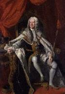

What do ye think o' Geordie noo?
Text By Lady Carolina Nairne
Tune (midi)Tune (mp3)
From "The Lays from Strathearn"
Tune
Another possibility: "The King's Health"
Simon Fraser's Collection
Sequenced by Christian Souchon


|
WHAT DO YE THINK O' GEORDIE NOO?
Laird. 1. “O what do you think o' Geordie noo? O what do you think o' Geordie noo? Come daughter mine, come tell me true, O what do you think o' Geordie noo?” Mysie. 2. “O Geordie we think nought ava, O what has brought him here at a'? We hae ae king, nae need o' twa, Sae Geordie ye maun march awa.” Laird. 3. “Oh daughter mine, I'm wae to see, Ye speak sae light o' majestie; Now Geordie's king o' kingdoms three, Ye maun obey baith him and me.” Mysie. 4. “O faither dear, I need na say, Your will's a law, I'll aye obey, But sure they're wud that can compare King Geordie wi' auld Scotland's heir!” Laird. 5. “Fair faced, I grant, the Stuarts a' be, But, oh, they're fu' o' treacherie; O, Mysie, lass, ye little ken The drift o' Cavaliering men !” Mysie. 6. “We're wae to see a foreign loon , Come over here to take our croun; Outlandish gibberish on his tongue, No understood by auld or young. (**) 7. “O Geordie's stout, and unco braid, He's no like Charlie in his plaid ; To see him dance , to hear him sing; O sure he is our rightfu' king!” Laird. 8. “It's no to sing, nor yet to dance. That we will tak' a king frae France; A bird that's ta'en frae an ill nest, It aye will do like a' the rest.” Mysie. 9. “For nae offence that we can see, Up in a rage will Geordie flee; The flames get then his periwig, That's no denied by ony whig.” Laird. 10. “A weel, a weel, and what's a' that, To them wha promise and draw back? Nae wiser by adversitie, O! tyrants a' the Stuarts wad be.” Mysie. 11. “O adverse winds round them did blaw, And he has seen and felt it a'; O, dinna believe ill tales are true, For that we all are apt to do.” Laird. 12. “It's true the sun will melt the snaw, It's true that time will wear awa, It's true that nicht will follow day, O, Mysie, there's truth in a' I say. 13. “O, Mysie, lass, dry up thy tears, And think nae mair o' cavaliers: To fecht 'gainst heaven is a' in vain, The Stuarts will never reign again.” Together. 14. “Auld Scotland is unconquered land, And aye for freedom made a stand; So let us a' in that agree, Hurra, hurra, for liberty!" (*) George II 1683 - 1727 - 1760 (**) This reproach applied to his father George Ist
|
QUE DIS-TU DE GEORGE A PRESENT?
Laird. (Seigneur écossais) 1. “Que dis-tu de George (*) à présent? Que dis-tu de George à présent? Ma fille, dis-le sans détour! Haïras-tu George toujours?” Mysie (Marguerite). 2. “Oh moi je n'en dis rien, ma foi, Il est là, je ne sais pourquoi? A quoi nous sert ce second roi?, George, retourne donc chez toi!” Laird. 3. “Fille, je ne trouve pas bon, Que tu le prennes sur ce ton; Qu'on le veuille ou non, c'est le roi Tu lui dois respect, comme à moi.” Mysie. 4. “Il va sans dire que je fais, Père, toutes tes volontés. Mais il est vain de comparer George au légitime héritier!” Laird. 5. “C'est vrai, les Stuart sont beaux garçons, Mais à trahir, comme ils sont prompts! Nous, vos aînés, nos connaissons Les Cavaliers et leurs façons!” Mysie. 6. “La peste soit de l'étranger Qui débarque et prétend régner; Et dont la langue est engluée Dans un exotique parler (**). 7. “Ce lourdaud de George est bien lent,! Vois Charles, vêtu du tartan ; Qui connaît la danse et le chant; C'est le vrai roi, assurément!” Laird. 8. “Est-ce pour le chant, pour la danse. Qu'on fait venir un roi de France? L'être taré par sa naissance Suivra les pas de son engeance.” Mysie. 9. “Où le mal est-il, je te prie, Si George, en courroux, déguerpit? Sa perruque prend feu déjà, Aucun Whig n'en disconviendra.” Laird. 10. “C'est bien beau, mais qu'est-ce, cela Pour qui promet et puis s'en va? Tous les revers n'ont rien appris Aux Stuart épris de tyrannie, .” Mysie. 11. “Sur eux la tempête a soufflé, Charlie ne fut point épargné; Mais ne crois pas les boniments, Car chacun peut en dire autant.” Laird. 12. “Le soleil suivra la froidure, Le temps guérira les blessures, Après la nuit viendra le jour, Mysie, aie foi dans mon discours. 13. “O Mysie, sêche donc tes larmes, Oublie les Cavaliers, leurs armes: C'est ce que le Ciel a voulu: Et les Stuart ne régneront plus.” Ensemble. 14. “Notre pays reste indompté, Pour vivre libre il a lutté; Sur un point nous sommes d'accord: La liberté, ou bien la mort! " (*) George II 1683 - 1727 - 1760 (**) Reproche justifié en ce qui concerne son père, George I (Trad. Ch.Souchon (c) 2006) |